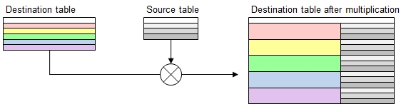

Function Names
table multiply, table multiply selected rowsDescription
A cartesian multiplication will be applied on the destination table using the data from the source table. All (selected) rows in the destination table will be
repeated by the number of rows in the source table and the additional columns be repeatedly appended.
table multiply selected rowstakes an extra parameter to specify abBoolean expression to select rows to multiply and leave the remaining rows unchanged.
Attention: Multiplication by zero rows: If the source table contains zero rows below the headers, then a multiplication by zero will happen, which means
that the rows in the destination will be removed.

Call as: procedure
Restrictions
Indirect parameter passing is disabled
Parameter count
2-4
Parameters
| No. | Type | Description |
|---|---|---|
| 1. input |
literal | Name of existing source table |
| 2. input |
literal | Name of destionation table |
| Opt. 3. code |
expression :literal |
Expression to select rows Applicable to function table multiply selected rows only, addressing the rows in the destination table. |
| Opt 3./4. input |
table column | Destination columns Specify a header name or column number where to insert the new columns added. The specified column and further ones to the right will shift to the
right accordingly.
|
Examples
table initialize( colors,
{ { Color, Delight, Another Delight },
{ red, tomatoes, strawberries },
{ yellow, bananas, lemons },
{ green, lettuce, cucumbers },
{ blue, plums, blueberries } } );
table initialize( shades,
{ { Shade, Example 2 }, { Dark, moonshine }, { Light, sunshine } } );
table multiply selected rows( shades, colors, ([Color]<>green), Another Delight );
// Why parentheses used in the 3rd parameter?
// Comparison would otherwise hijack the 4th parameter.
// Alternatively, use '!=' which expects only 1 comparison operand.
table list ( colors );Output
0 : Color | Delight | Shade | Example 2 | Another Delight
1 : red | tomatoes | Dark | moonshine | strawberries
2 : red | tomatoes | Light | sunshine | strawberries
3 : yellow | bananas | Dark | moonshine | lemons
4 : yellow | bananas | Light | sunshine | lemons
5 : green | lettuce | | | cucumbers
6 : blue | plums | Dark | moonshine | blueberries
7 : blue | plums | Light | sunshine | blueberries